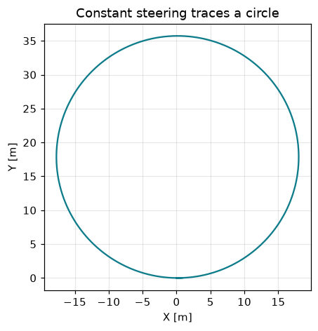
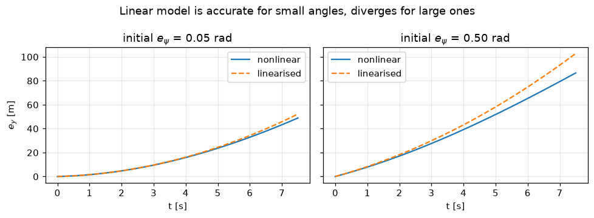

Goal. Derive, from geometry, the plant that everything else in the course
controls: a vehicle tracking a lane. We build the kinematic bicycle model from the
rolling (no-slip) constraints, rewrite it in road-relative error coordinates,
discretise it, linearise it term by term, and check the structural properties
(controllability, observability) that later let a controller and an estimator work.
Why a model at all? The controller (notebook 02) and the Kalman monitor (notebook
05) are both model-based: they use a mathematical prediction of how the vehicle
moves. The quality of that model sets the quality of both. So we take it seriously,
and we quantify where it stops being valid.
At low lateral acceleration the two wheels on each axle can be lumped into one,
giving a bicycle: one rear wheel, one steered front wheel, wheelbase L. We
place the reference point at the rear axle and take the state (X, Y, \psi) =
position and heading in the ground frame.
The key modelling assumption is no side-slip: each wheel rolls in the direction
it points (a nonholonomic constraint [4]). Then
the rear wheel moves along the heading, so \dot X = v\cos\psi,\; \dot Y = v\sin\psi;
the front wheel points at \psi+\delta; requiring both wheels to share one
instantaneous centre of rotation (ICR) fixes the turn radius R=L/\tan\delta,
hence the yaw rate
\dot\psi = \frac{v}{R} = \frac{v}{L}\tan\delta.
Collecting these,
\dot X = v\cos\psi,\qquad \dot Y = v\sin\psi,\qquad \dot\psi=\frac{v}{L}\tan\delta. \tag{1}
This is the standard kinematic bicycle [1,2]. The schematic below shows the
geometry; note the ICR sits on the line through the rear axle, perpendicular to the
vehicle heading, at distance R.
# Sanity check: a constant steering angle should trace a circle of radius L/tan(delta)
v, L, Ts = 15.0, 2.7, 0.02
def global_step(s, delta):
X, Y, psi = s
return np.array([X + v*np.cos(psi)*Ts, Y + v*np.sin(psi)*Ts, psi + v/L*np.tan(delta)*Ts])
delta = 0.15; s = np.array([0.0, 0.0, 0.0]); H = [s]
for _ in range(int(2*np.pi*(L/np.tan(delta))/(v*Ts)) + 3):
s = global_step(s, delta); H.append(s)
H = np.array(H)
R_true = L/np.tan(delta); R_est = (H[:,0].max() - H[:,0].min())/2
plt.figure(figsize=(4.4, 4.4)); plt.plot(H[:,0], H[:,1], color="#0e7c8b")
plt.gca().set_aspect("equal"); plt.title("Constant steering traces a circle")
plt.xlabel("X [m]"); plt.ylabel("Y [m]"); plt.grid(alpha=.3); plt.tight_layout(); plt.show()
print("radius from geometry L/tan(delta) = %.2f m from simulation = %.2f m" % (R_true, R_est))

radius from geometry L/tan(delta) = 17.86 m from simulation = 17.86 m
2. Road-relative (Frenet) error coordinates
For lane keeping we do not care about absolute position, only the error relative to
the lane centreline. Attach a Frenet frame to the reference path, parameterised
by arc length s with curvature \kappa(s)=\mathrm d\psi_{ref}/\mathrm d s, and
define
e_y = \text{signed lateral offset from the centreline},\qquad
e_\psi = \psi - \psi_{ref}.
Differentiating the geometric relations gives the exact error dynamics [1,8]
\dot s = \frac{v\cos e_\psi}{1-\kappa\,e_y},\qquad
\dot e_y = v\sin e_\psi,\qquad
\dot e_\psi = \frac{v}{L}\tan\delta - \kappa\,\dot s .
For small offset (\kappa e_y \ll 1) the along-path speed is \dot s\approx v, and
the model used throughout the course follows:
So \kappa enters as a measured disturbance: on a curve the lane tangent itself
rotates at rate v\kappa, and the steering must supply that yaw rate merely to stay
parallel to the lane (this is exactly the feed-forward of notebook 02).
3. Discretisation and its error
We integrate (2) in discrete time with forward Euler at sample time T_s:
Euler has local truncation errorO(T_s^2) per step and therefore global
errorO(T_s) over a fixed horizon - it is a first-order method [7]. That is
adequate here because T_s=0.05 s is small relative to the vehicle time constants,
but it is worth seeing the order rather than asserting it: below we compare Euler
against a high-accuracy RK4 reference and recover the slope-1 line on a log-log
plot.
Controllers and observers are easiest to design on a linear model. Linearise (2)
about the centred, aligned operating point x=0,\ \delta=0 by taking the Jacobians
of the one-step map x_{k+1}=F(x_k,\delta_k,\kappa_k):
The approximation error comes from \sin e_\psi\approx e_\psi and
\tan\delta\approx\delta, whose leading terms are cubic, so the linear model is
excellent for small errors and degrades smoothly as they grow. Let us see exactly
where.
v, L, Ts = 15.0, 2.7, 0.05
A = np.array([[1, v*Ts], [0, 1.]]); Bv = np.array([0, v*Ts/L]); Ev = np.array([0, -v*Ts])
def f_nl(x, d, kap): return np.array([x[0] + v*np.sin(x[1])*Ts, x[1] + (v/L*np.tan(d) - v*kap)*Ts])
def f_lin(x, d, kap): return A@x + Bv*d + Ev*kap
t = np.arange(151)*Ts
fig, ax = plt.subplots(1, 2, figsize=(9, 3.3), sharey=True)
for a, e0 in zip(ax, (0.05, 0.5)):
xn = np.array([0.0, e0]); xl = np.array([0.0, e0]); Hn, Hl = [0.0], [0.0]
for _ in range(150):
xn = f_nl(xn, 0.02, 0.0); xl = f_lin(xl, 0.02, 0.0); Hn.append(xn[0]); Hl.append(xl[0])
a.plot(t, Hn, label="nonlinear"); a.plot(t, Hl, '--', label="linearised")
a.set_title("initial $e_\\psi$ = %.2f rad" % e0); a.set_xlabel("t [s]"); a.grid(alpha=.3); a.legend()
ax[0].set_ylabel("$e_y$ [m]")
fig.suptitle("Linear model is accurate for small angles, diverges for large ones")
plt.tight_layout(); plt.show()

5. Structural properties
Two questions decide whether model-based control and estimation are even possible.
Open-loop behaviour. The eigenvalues of A are both 1: the error dynamics are
a marginally stable integrator chain (heading error integrates into lateral
error). Errors do not grow explosively, but they do not decay either - hence the
need for feedback.
Controllability. Can steering drive any error to zero? Yes iff [\,B\ \ AB\,] has
full rank (notebook 02 uses this).
Observability. In the full system we do not measure the state directly. Can we
reconstruct it from measurements? With the perception giving both components,
C=I, this is immediate; more interestingly, even measuring only the lateral
offset (C=[1,\ 0]) the pair (A,C) is observable, so heading error can be inferred
over time [5,6]. That is what makes the Kalman monitor of notebook 05 well posed.
A = np.array([[1, v*Ts], [0, 1.]]); B = np.array([[0.], [v*Ts/L]])
ctrb = np.hstack([B, A@B])
C = np.array([[1.0, 0.0]]) # measure only lateral offset
obsv = np.vstack([C, C@A])
print("eigenvalues of A :", np.linalg.eigvals(A), " (integrator chain)")
print("rank[ B AB ] (controllab.):", np.linalg.matrix_rank(ctrb), " / 2")
print("rank[ C; CA ] (observab.) :", np.linalg.matrix_rank(obsv), " / 2 from e_y alone")
eigenvalues of A : [1.+0.j 1.+0.j] (integrator chain)
rank[ B AB ] (controllab.): 2 / 2
rank[ C; CA ] (observab.) : 2 / 2 from e_y alone
6. When does this model stop being valid?
The kinematic model assumes tyres do not slip, which holds only at modest lateral
acceleration. On a curve of radius R the lateral acceleration is
a_y = \frac{v^2}{R} = v^2\,\kappa .
A common rule of thumb is that the kinematic model is trustworthy while
a_y \lesssim 0.5\,\mu g (roughly half of the tyre-road friction limit); beyond
that, side-slip matters and one should switch to a dynamic bicycle model with
tyre forces [1,2,3]. Kong et al. [2] compare the two for control design, and Polack
et al. [3] give consistency conditions for using the kinematic model in planning.
For this course we stay well inside the valid region: at v=15 m/s the largest
curvature we test, |\kappa|=0.04, gives a_y = 9\ \mathrm{m/s^2}\approx 0.9g -
deliberately near the edge, which is part of why that scenario is "out of
distribution" for the perception and stressful for the plant.
v = 15.0
for kappa in (0.012, 0.022, 0.04):
print("kappa = %.3f 1/m -> R = %5.1f m, a_y = %.2f m/s^2 = %.2f g"
% (kappa, 1/kappa, v**2*kappa, v**2*kappa/9.81))
kappa = 0.012 1/m -> R = 83.3 m, a_y = 2.70 m/s^2 = 0.28 g
kappa = 0.022 1/m -> R = 45.5 m, a_y = 4.95 m/s^2 = 0.50 g
kappa = 0.040 1/m -> R = 25.0 m, a_y = 9.00 m/s^2 = 0.92 g
Exercises
Re-derive \dot\psi=(v/L)\tan\delta from the ICR geometry (hint: the front and
rear wheels share one centre of rotation; write the radius to each).
In the discretisation study, replace Euler with the midpoint method and confirm
the fitted order becomes 2.
Drive the global model (1) along a sinusoidally curving reference, compute
e_y, e_\psi, and check they match the error model (2) - where do they start to
differ, and why (look at the 1-\kappa e_y term)?
Compute the lateral acceleration at which the kinematic assumption breaks for a
dry road (\mu\approx 0.9). Which of the course scenarios approach it?
References
R. Rajamani. Vehicle Dynamics and Control, 2nd ed. Springer, 2012. (Kinematic and dynamic models; lane-keeping error dynamics.)
J. Kong, M. Pfeiffer, G. Schildbach, F. Borrelli. Kinematic and Dynamic Vehicle Models for Autonomous Driving Control Design. IEEE Intelligent Vehicles Symposium, 2015. doi:10.1109/IVS.2015.7225830
P. Polack, F. Altche, B. d'Andrea-Novel, A. de La Fortelle. The Kinematic Bicycle Model: a Consistent Model for Planning Feasible Trajectories for Autonomous Vehicles? IEEE Intelligent Vehicles Symposium, 2017. doi:10.1109/IVS.2017.7995816
S. M. LaValle. Planning Algorithms. Cambridge University Press, 2006. (Nonholonomic constraints, the simple-car model.)
T. Kailath. Linear Systems. Prentice Hall, 1980. (Controllability and observability.)
J. P. Hespanha. Linear Systems Theory, 2nd ed. Princeton University Press, 2018.
U. M. Ascher, L. R. Petzold. Computer Methods for Ordinary Differential Equations and Differential-Algebraic Equations. SIAM, 1998. (Order of Euler and Runge-Kutta methods.)
M. Werling, J. Ziegler, S. Kammel, S. Thrun. Optimal Trajectory Generation for Dynamic Street Scenarios in a Frenet Frame. IEEE ICRA, 2010. doi:10.1109/ROBOT.2010.5509799